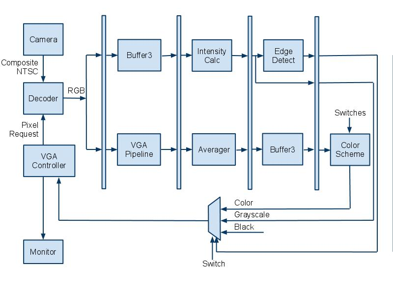

Introduction
Our project is a real time cartoonifier. It bolds edges and reduces colors to make the video feed look like a cartoon. The colors can be reduced on a per channel basis from 3 bits per color all the way down to grayscale.
Cartoonization is the act of modifying an image so it looks as if it were rendered by a computer or sketched by an artist. This includes bolding any edges or contours in the image and making colors brighter and more vibrant. In addition the amount of colors used in the image is reduced and smoothed out. In our implementation the number of possible colors is selectable by the user.
We use a video decoder and VGA driver provided by Terasic to implement real time cartoonization on the Altera DE2 FPGA board. Video feed is sent to the board’s decoder chip from a camcorder via a composite cable. Once decoded to RGB, the signal passes through edge detection, time averaging and color reduction modules that we created in hardware. The cartoonized pixel data is then handed off to the board’s VGA driver and outputted to a monitor for viewing.
The user is able to select both the color reduction scheme for each color channel and also the edge detection threshold by using the DE2’s switches. There are also options to display in grayscale and brighter color schemes selectable by the switches as well.
[top]
High Level Design
Rationale and Sources of Project Idea:
After working closely with video on the DE2 for two of our class projects, we thought it would be interesting to use the VGA driver again on the final project. We also wanted to gain experience with the on-board video decoder chip for future projects. We wanted practice in designing embedded systems for a challenging project that encompasses video signal processing, real-time calculations, and component integration. We also wanted a project that was fun to work on and visually interesting.
The inspiration to create a cartoonifier came from many of the modern video games and television commercials that use bold edges and color simplification to create cartoon-like renditions of real people. An example from a Charles Schwab commercial is shown below.
{kind=link}
Cartoonizations like the one above are common today, but very few can be rendered in real-time. We thought it would be an interesting challenge to create a device that could create cartoons on the fly from a camcorder feed.
Background Math:
For our edge detection algorithm, we use two Sobel filters. There are two distinct filters, one which computes vertical edges (left) and one for horizontal edges (right). The filters can be seen below. The filters are convolved with the entire input image. The middle pixels are weighted more heavily than the outer pixels, since they are closer to the pixel in question (center of grid) and thus have a higher impact on the edge gradient for that pixel.
{kind=link}
For our intensity calculation, we use 25% red, 50% green, and 25% blue. We have chosen these numbers because the human eye is most sensitive to green. We have also chosen to use only 25% or 50% because divide by 2 or divide by 4 are trivial operations in hardware implementations, they are simply a shift. This is important for our goal of real-time execution.
Logical Structure:
The video input feed required by our project is generated by a digital camcorder provided to us by Bruce Land. It can output directly to a composite cable in NTSC standard video format in real time. The DE2 has an on-board video decoder with a composite video signal input port. The decoder is able to save pixel information in a multiple port SDRAM and later convert the inputted video feed to YCbCr and RGB formats. This decoder is provided to us by the Terasic example decoder code on the DE2 CD in the box.
Once decoded, the video signal is then split off to two different pipeline paths: one for edge detection and one for color time and spatial averaging and color simplification. Along the edge detection path, the streaming pixel data is first fed into a large set of shift registers that holds pixel data for three entire lines worth of pixels. This is required because our edge detection algorithm requires not only the pixel in question, but the eight neighboring pixels as well. A 3x3 block of pixels centered around the pixel in question is chosen from the shift registers and sent to an intensity calculation module. The intensity calculation module calculates the intensity of each of the 9 pixels in the block and feeds the intensity values to both horizontal and vertical edge detection modules. These modules apply a Sobel filter algorithm to the appropriate pixels to detect an edge. If there is an edge, a select signal is sent to a final MUX to select black as the pixel color.
In the color manipulation pipeline, the pixel data is first sent to an identical set of shift registers as in the other pipeline just to keep the two paths synchronized. The output of this module is sent to a time and spatial averaging module. This module interacts with SRAM and saves a history of past values for every pixel in the raster to time average out noise to reduce flickering. It also does 2x2 block spatial averaging to further smooth out the image. After some additional pipeline registers to match timing with the other path, the colors are simplified based on user input from the switches, which change the number of colors that each channel can represent.
Finally the two paths converge at the input to the final MUXing that determines the value of the pixel in question. If there is an edge, black is chosen, otherwise color is chosen. There is also the option to choose a grayscale image, which is simply the intensity value for the pixel that was calculated earlier in the edge detection path. The output of the MUX is sent to the VGA controller provided to us by Terasic. The controller module drives the VGA output port on the DE2 board and is hooked up to an external monitor to display the raster, which is updated in real time.
{kind=link}
Hardware/Software Tradeoffs:
The main trade-off that we made in this project was with our edge detection. We chose a simple edge detection algorithm because it will always take the same amount of time to process the entire screen. We could have had much better and crisper edges if we had gone with a more complex detection scheme, but this would have resulted in a variable amount of time to process the screen. The more edges present, the longer it would take to process the image. This could pose issues, since a main goal of our project was to make it operate in real-time. For this reason, we had to sacrifice the ability to have more robust edge detection, to go with a scheme that ran in constant time.
We also had to make a trade-off with regards to the color simplification. The fewer colors we output, the more the output would flicker. This is because the rounding of a slightly wavering input value between two output values has a more dramatic effect when those output values are farther apart.
To avoid flicker, we added time averaging of our inputs. However, since we could only fit so much data into SRAM, we only were able to store 5 bits per color for time averaging. Time averaging works by storing your value, then with each input you subtract 1/T times the stored value and add 1/T times the input value, where T is the period used for averaging.
So, in order to average over 4 frames, we have to divide by 4 (shift right 2) in our code. This leaves only 3 significant bits per color. 8 frame averaging leaves us with 2 significant bits per color. With only 2 or 3 input bits affecting the output, it was possible to wave a red object in front of an off-white wall and have a red streak remain onscreen since the white wasn’t white enough in the top 2 or 3 bits to remove the red left in the time average storage.
We tried out a combination of levels of time averaging, but this provided troublesome too. We averaged across 8 frames to keep things smooth and every second we allowed the input to have twice as much weight. This meant most of the time was smooth and every second we removed the ghosting, but the ghosting removal caused a noticeable flash on the entire screen as all the slowing changing pixels suddenly changed.
The final trade-off that we had to make was with regards to choosing between HSL and RGB simplification techniques. We played around a lot in MATLAB and with the FPGA and camera in the lab testing out various color simplification schemes. Our original theory was that hue-based simplification would look more like a cartoon since an unevenly lit single colored object would come out as one color, and resemble the simple lighting used in cartoon drawings. However, single colored objects are not the only things of interest for video processing.
Since it is most entertaining to have people on the camera, the handling of skin tones became a high priority. Since we didn’t wear TV-style make-up, our complexions often became rather splotchy on the camera. RGB space simplificaiton seemed to be less splotchy than HSL simplification, so we went with RGB for the final version.
Relationship of design to standards:
Our design takes a NTSC video standard signal as an input that comes from the video camera over a composite cable. We also must output pixel data to the CRT monitor in NTSC standard as well. An overview diagram of the NTSC video standard is shown below. The important part that we must take into consideration is the amount of time when valid data is not being requested and transmitted. This is a 10.9 microsecond period of blanking during a transition between lines. This is followed by a 52.6 microsecond period of data transmission to update the line. We use this blanking period as a disable signal that stops any color calculation or history updating when the pixel data is invalid. When valid data is being requested and transmitted we allow the calculations. The VGA Controller provided by Terasic handles the pixel request and output timing to adhere to the NTSC timings that the monitor requires.
{kind=link}
[top]
Hardware Design
3-line Buffer:
Our 3-line buffer is just a series of 3 large registers which hold the pixel information for an entire line of the VGA screen. Each line is 640 pixels, and each pixel has 30 bits of information, 10 bits for each of red, green, and blue. If the module is enabled, then on the clock edge our shiftin input will be stored in the first pixel of line1, with the rest of the pixels shifing up 1 slot, we also output line2[638] as shiftout. This pixel information is then later used in the top level module and output to the screen. We also output a grid of pixels, which are later used in our edge detection modules. We output line2[638] because this is the pixel that is the center of the grid. This means that the subsequent calculations for edge detection are being done for this pixel, and thus when it comes time to output to the screen, we must output that pixel (or black if it is an edge).
This module, while originally designed in registers, was optimized to M4K blocks by the compiler. This makes its operation slightly slower, but otherwise we would not have enough registers for the entirety of our project.
{kind=link}
Intensity Calculator:
The intensity calculator module is a simple hardware implementation of a weighted averaging between the different color channels of the pixel. The red, green, and blue values of the pixel in question are given to the intensity calculator during each cycle while the VGA is not blanking. We chose to weight the intensity of a pixel as 25% red value, 50% green, and 25% blue. We chose green to be greater than red and blue because the human eye is most sensitive to this color. The coefficients are chosen as powers of 2 so we can use shift and add operations instead of costly multiplications. We let the compiler optimize the addition and shift operations as necessary and register the result each cycle, which is then outputted to the edge detectors. We instantiated 9 intensity calculator modules in our final design to account for the block of 9 pixels that the edge detection algorithm requires.
Edge Detectors:
There are two distinct modules for edge detection, one that does the vertical edges, and one that does the horizontal edges. The only difference between the two is which convolution filter it uses (described in Background Math), the rest of the execution is exactly the same. The input grid of 9 pixels comes from the intensity calculator. The module then convolves this grid of pixels with the filter, and does the necessary additions and subtractions. This sum is then checked against a threshold. We calculate two versions of the sum, since there is a possibility it will be negative. We calculate the original sum and the negative of it, which guarantees that one of the two will be positive. Then we check which one is positive, and check that value against the threshold. This avoids some possibly disastrous complications, which include difficulty with sign on comparisons, or the need for two thresholds, 1 positive and 1 negative.
The threshold for this module is variable, and can be set using the switches and a push button to register the new threshold value. We originally had the threshold variable at 16 bits, but this was causing timing errors that resulted in smearing on the screen. We reduced the threshold to only be a 10 bit number, which removed the timing issues. The module outputs a 1 if the pixel is an edge, and a 0 if the pixel is not an edge.
Time Averager:
We decided to average the pixel data both in time and space to reduce the noticeable flicker caused by color simplification. The module uses the on-board SRAM to store a history of past values of blocks of pixels to perform a weighted average on along with new incoming pixel data. The module is split into two components: an averager module that performs a combinational weighted average, and the hardware associated with SRAM communication.
The averager module takes in the color information of the current pixel, the history for that pixel, and outputs the new value for the pixel to be saved in SRAM. We designed the averager to keep a running average of the last 4 frames worth of pixel data for each pixel in the raster. This means we want to add ¾ of the old value to ¼ of the new value to get the updated average. We chose to average 4 frames because it is a power of 2 and can be calculated using shift and add operations, thus avoiding costly multiplications. Instead of trying to calculate ¾ of the old value directly, we use (1 - ¼) times the old value. The final equation for the new average is:
The averager module assumes that each color channel will have 5 bits of precision. This is determined by the word size of the SRAM, which is 16 bits. We have three 5 bit colors, which is 15 bits, and 1 unused bit that is stored in the SRAM. All three colors are averaged at the same time within the averager, and the value is outputted without registering.
The time averager module is responsible for communicating with the SRAM and feeding its data to and from the averager module. To implement a 2x2 spatial averager, first we needed to change the addressing of the pixels by removing the least significant bit of the X and Y coordinates. This makes 4 adjacent pixels all reference the same location in SRAM. This reduces the total required SRAM and allows us to use a full word for pixel data instead of sharing 2 pixels per 16 bit word of SRAM as we have done in the past.
The SRAM takes a cycle to read and another to write, which is a problem if a new pixel is required each cycle. Luckily we are averaging 2 pixels at a time and adjacent horizontal pixels are requested one after another. This means we only need the history once for both the pixels together instead of both individually, which gives us 2 cycles per 2 pixel horizontal pair. We take advantage of this by reading the history for the two pixels in the first cycle and write the updated history for the two pixels in the second cycle. The history gets updated with both new pixel values for that 2 pixel block by using an intermediate history value that is stored in a register and not in SRAM.
The current address requested is always sent to the SRAM address port with the LSB of X and Y coordinates removed. This makes the address the same during the first and second cycle of a pixel pair. The write enable for the SRAM is only set high in the second cycle, which is determined by the LSB of the X coordinate. There is a single data port to the SRAM that must be floating during the first cycle for reading, and set to the updated history value from the averager during the second cycle. The write enable to the SRAM can only be set high when the VGA controller is not “Blanking” because we only want to update the pixel history with valid data being requested by the VGA controller.
The input to the averager module’s “old” port during the first cycle is the history data read from the SRAM. The input to the current colors are always the current color channels coming from the SDRAM requested by the VGA controller. The output of the averager is registered after the first cycle and used as the “old” input to the averager in the second cycle. The output during the second cycle is sent to the SRAM. This system uses both current adjacent pixel colors to update the average, while only needing to update the SRAM once. The output of the averager is also set as the output of the timeAverager module for each cycle. This is in a 5-5-5 RGB format.
Muxing / Pipelining:
Because we need to operate in real-time, we separate the computation into 2 pipelines for computation. One pipeline is responsible for calculating the edges, while the other does the time averaging and color reduction. For the edge detection pipe, the first stage is to run through the 3-line buffer. For the color reduction pipe, the first stage is pipelining logic for the VGA signal inputs to the Time Averager.
For the color reduction pipeline, the stage 2 operation is the Time Averager. For the edge detection pipeline, stage 2 is the intensity calculator. Stage 3 is then the edge detectors, with the output of the two detectors being combined in an OR gate. For the other pipeline, stage 3 is the 3-line buffer. This is important because we must ensure that both pipes have the same amount of delay, so that the edges line up with the color image. Stage 4 is where the two pipes are combined. The user input masking logic is also here. The muxing is done in three stages, first we choose between color or grayscale. Next we choose the number of significant bits to use. Finally we choose between the color/grayscale pixel, or a black pixel (edge).
VGA Controller Modifications:
The VGA controller that Terasic kindly provides is defaulted to send a pixel request and receive the data from SRAM all in one cycle. Without any additional hardware this is a tight timing path to meet. In addition to this, we have to insert several pipeline stages and hardware modules to do our edge detection and color simplification. To make sure the VGA controller is receiving the data it thinks it is, we must send a request for the data a certain number of cycles early to allow for the delay through all the extra pipeline stages that we have added. We added 2 lines (minus 1 pixel) of pixel delay for the shift registers, 1 cycle for the intensity calculation, 1 cycle for the edge detection, and 1 cycle for the MUXing, which totals 2 vertical lines and 2 horizontal pixels worth of delay.
Within the VGA Controller we added H_DLY and V_DLY parameters to add in these pixel delays. They cause the controller to start sending its stream of pixel requests before the end of the HSYNC by the delay amount specified. This means we actually start requesting pixels during the horizontal sync so the data arrives by the time the rest of the controller expects it.
RGB to HSL and Back:
In order to do hue simplification to cartoonify our image, we had to first map our RGB input into HSL space. This proved much easier in theory than in practice. We found that there is basically one way to do it, although one can change the ranges used to represent values to adjust the algorithm to different environments. Our algorithm is based on the formulas listed here, which are taken from Fundamentals of Interactive Computer Graphics by Foley and van Dam (c 1982, Addison-Wesley), Chapter 17. These for the most part keep values in the range of 0 to 1. However, at some points in the formula temporary values exceed 1. Also, it maps hue to 0 to 6, since it is important for hue to be divisible by 3. On top of the weird numbers, converting RGB to HSL involves several divides, and converting back involves several multiplies. The formulas given also use negative temporary values sometimes. This makes for a difficult choice of hardware implementation.
Difficult yes, impossible, no. We settled on doing all the math in 1.8 fixed point with occasional flags for negatives as needed. 1.8 fixed point meant we had 8 bits for the range 0 to 1 where most of the action happens and had a carry bit for where it was needed for temporary values. 1.8 fixed point also fits nicely into the 9 bit multipliers. This solves all the issues except hue, with the formulas going up to 6 in value and mandating divisibility by 3. To get around this, we stored our hue value as 1.8 fixed point with a maximum of 0.11000000 (3/4ths, or 192 as an integer). By sacrificing 1/4th of our range, we gained the divisibility by 3 needed for mapping 3 colors to one hue value and then the 1 hue back to 3 colors. See RGBtoHSL.v and HSLtoRGB.v for verilog source code.
1.8 unsigned fixed point multiplication means one keeps bits 16:8 out of the 17:0 hardware “*” result. For division, first shift the quotient left 8. Then divide. Then keep bits 8:0 out of the 17:0 hardware “/” result. As a sanity check, this means dividing by 1.00000000 will give the same result - hardware division is integer division so dividing by 1.00000000 means shifting right 8.
See ufpMult.v and ufpDiv.v for verilog source code.
Lookup Table for Hue Simplification:
Unfortunately, even the correctly implemented RGB to HSL conversion formulas left some ugly artifacts due to the loss of precision and finicky edge cases. However, since we had RGB input and needed an RGB result, there was no explicit need to deal with HSL in hardware. Therefore, we created a hue simplification module that just used a lookup table that mapped RGB input to RGB output. The table sized we settled on was 3 bits per color, so total size was 2^9 or 512 entries. We tried 4 bits per color, but 2^12 meant 4096 entries which was too slow in hardware. See the software section for how we populated the table entries. The verilog code is in RGB_HueSimplifier.v
[top]
Software Design
Color Simplification Test Script (MATLAB): RGB, HSL, Edge Detect:
In order to quickly see the results of various color simplification schemes, we wrote a MATLAB function to simulate what our hardware would do. The script takes in an image, simplifies the colors, and outputs two images: one with edges highlighted and one without. Since the script ran in seconds and the simplification scheme was easy to adjust, this let us test out a lot more schemes than would’ve been possible by repeatedly changing them in hardware and waiting for the Verilog to compile.
For color simplification in HSL space, we first used a 3rd party script to convert RGB values to HSL values. We then rounded each of the hue, saturation, and lightness values into some determined set of values. For example, if we specified 32 hues, hue was rounded to the nearest 1/31nd on a 0 to 1 scale - 31 was used since both 0 and 1 show up when rounding. We then used a 3rd party script to convert the HSL back to RGB.
For color simplification in RGB space, we simulated the effect of simply dropping bits on the FPGA by using floor() to round values. Each of the red, green, and blue values was multiplied by 2^n, floor()’d, then divided by 2^n to effectively keep only the most significant n bits of the fixed point value that is used on the FPGA.
Our edge detection in software was algorithmically identical to the edge detection used in hardware. Both use a Sobel edge detection filter. The major difference was in software we ran it by looping over a 3 pixel wide band of a static image, where as in hardware it handed a 3 pixel wide stream. The software code currently allows for the output of edges to be half as dark when an edge is only detected in one direction.
See Appendix A for photos
HSL Simplification Lookup Table Generator (MATLAB):
During development we eventually decided using a lookup table for hue based simplification was better than doing the HSL to RGB conversion and back in hardware. Since we had the conversion working both ways in MATLAB, we utilized that and made a MATLAB script that generates a lookup table mapping RGB input values to RGB output values that have been simplified by rounding in HSL space. The script generates a list of all possible inputs (based on using 3 bits per color), converts them all into HSL values, rounds them according to some scheme, then converts them back to RGB and lists the output next to each respective input. We decided on a 9 bit lookup table because a 12 bit table was too slow and caused massive horizontal smearing in the output. However, this means our HSL simplification process is not only simplifying in hue space, it is simplifying in RGB space since it only has 3 bits per color of input and output for the table.
[top]
Development Process
General Hardware Design:
We started the project design with a few brainstorming sessions, at the end of which we had a block level diagram of what we thought the system would look like. Our first step in the design was to get the 3-line buffer in, without any other modifications. This involved tweaking the VGA controller to send addresses earlier than it needed them back, since the data was received significantly later.
Once we had the buffer in, and outputting to the screen without any noticeable defects, we began to work on the edge detection. We started by designing the filters, and setting up the system to display an all black background, with only white pixels where there were edges. We used this video feedback to tune our threshold for the edge detection. We wanted edges to be thick and this method allowed us to see the edges change as we changed the threshold.
After implementing the edge detection scheme, we moved to working on the color reduction aspect of the lab. This started by just reducing the number of bits we use in the color. This produced a decent output, but we thought that by converting to hues we might be able to do better. Kerran took the hue conversion aspect and ran with it, and the debugging for this specific aspect can be seen below. During this time, we also realized that we had a major problem with flicker, which we chose to address by using time averaging. We designed a time averager and dropped it in, and we also decided to stick with a simple RGB reduction for our output scheme.
Once we had the system pretty much finalized, we decided to put in some extra features that would help with the demo. We put in variable edge detection, which can be set using the switches and then locked in using a push button. We also made it variable for the number of bits we use for each color. There are a maximum of 5 bits for each color, which each have 5 switches, which can be set active or inactive and locked in using a push button. We allow for viewing in grayscale, by toggling switch 0. Finally we can adjust the brightness by toggling switch 1, which controls wheter the inactive bits are set to zero or one.
Debugging HSL Conversion
The most useful thing we found for debugging the HSL conversion process was to point the camera at a color wheel or linear color spectrum. These spatially organized colors meant we could look for breaks in the spatial patterns in our output that indicate edge case failures, precision issues, or bugs. Our standard output was the final RGB result, but we found it very useful to take advantage of the ability to put things besides red, green, and blue on the three channels. The first channel, which always appeared as a red value on the monitor, could be either the actual red output, nothing, or the hue value output. The second was green, nothing, or the saturation. The third was blue, nothing, or lightness. This allowed us to debug each of the three aspects of HSL conversion independently.
The horizontal hue spectrum below, was great for hue testing, and appeared shaded from dark to bright red left to right when our only enabled output was hue on the red channel. We found this image on a project page from a previous year here.
{kind=link}
The hue-saturation color wheel below was good for testing hue and saturation. When outputting only saturation (green channel), the wheel appeared on our output as dark in the center with bright green edges. There were a few regions where the saturation maxed out prior to the edge of the circle, likely due to camera and screen signal processing as well as hardware mathematical imprecision. The hue did a nice job of wrapping around the circle going from dark to light, with the split down the center of the red region. As with saturation though, there were a few blobs on the edges due to imprecision and all the intermediate processing. We found this picture here.
.png){kind=link}
{kind=link}
[top]
Results
For our final result, we had a complete cartoonifier system that ran in real time. We could variably set the edges and the bit simplification for each color. We could display in both color and grayscale. We accomplished the goals that we set out to accomplish, and the video output looked like what we expected.
There is a tiny bit of delay in the system, that is only noticeable if you watch a moving mouth and directly compare it to the rendered image on the screen. There is a minimal amount of flickering of colors, but not enough to distract from the overall execution of the system. In general, it works well, and it does what we expected of it.
Below are two sample images of our output, one in grayscale and one in color. The color image shows the rendered image next to the real image. There are additional photos in the appendix.
{kind=link}
{kind=link}
[top]
Conclusions
Overall we were very satisfied with the results of our project. We implemented a real-time cartoonifier that used an edge detection algorithm, time/space averaging, and selectable color simplification. The images we can produce are very convincing and in many cases look like they were sketched by an artist. We were able to accomplish all of this while keeping the hardware fast enough to keep up with the constantly updating stream of video data from the camcorder. We were able to conform to the NTSC video standard both while reading data from the camera and while outputting data to the monitor.
However, we were not able to produce ideally cartoonized images for several reasons. There was a noticeable amount of flickering in our video due to the color simplification scheme. We were able to reduce this somewhat by averaging pixels together both in time and space. We would have liked the flickering to be minimized further. Also, we initially wanted fewer more vibrant colors so that everything within an edge boundary would be the same color. We tried to accomplish this using HSL simpflication but ran into problems. Mostly the colors that came out looked strangely different than what they should be using this scheme. We would have liked to use fewer, more vibrant colors, but non-ideal lighting and “boring” colors make this difficult.
This was a very fun and interesting project that challenged us in video processing, real-time calculation, and embedded system design. This design could be produced, but a large portion of it is based off of the Terasic example code that came with the DE2 board.
[top]
Appendix A: Photos/Videos
Final output images
- Group Grayscale
- Jeff Grayscale
- Kerran Grayscale
- Tom Grayscale
- Group color w/ setup
- Jeff color w/ setup
- Tom color
{kind=link}
{kind=link}
{kind=link}
{kind=link}
{kind=link}
HSL simulation images
- Original Image
- HSL, 16 Hues, 3 Saturation Levels, 3 Lightness Levels, no Edges
- HSL, 16 Hues, 3 Saturation Levels, 3 Lightness Levels, with Edges
- HSL, 32 Hues, 4 Saturation Levels, 4 Lightness Levels, no Edges
- HSL, 32 Hues, 4 Saturation Levels, 4 Lightness Levels, with Edges
- RGB, 2 bits of each color, no edges
- RGB, 2 bits of each color, with edges
- RGB, 3 bits of each color, no edges
- RGB, 3 bits of each color, with edges
- RGB, 4 bits of each color, no edges
- RGB, 4 bits of each color, with edges
{kind=link}
{kind=link}
{kind=link}
{kind=link}
{kind=link}
{kind=link}
{kind=link}
{kind=link}
{kind=link}
{kind=link}
{kind=link}
Videos
- Tom - Project Description
- Jeff - Edges Only
- Bruce - Edges Only
- Group - Grayscale, Edges Off
- Group - Grayscale, Edges On
- Bruce - Grayscale
[top]
Appendix B: Our Code
Final system code
- averager.v
- buffer3.v
- DE2_TV.v
- edgedetectH.v
- edgedetectV.v
- intensityCalc.v
- newPress.v
- TimeAverager.v
- VGA_Ctrl.v
- .sof program file
HSL code
- HSLtoRGB.v
- RGB_HueSimplifier.v
- RGBtoHSL.v
- ufpDiv.v
- ufpMult.v
- ColorSimplify.m
- hsl2rgb.m
- rgb_hslSimplify_rgb.m
- rgb2hsl.m
[top]
Appendix C: Cost Details
The DE2 Development board we used was generously donated by Altera, and the video camcorder was lent to us by Professor Bruce Land. Any other resources used, such as VGA cables and monitors were provided in the lab.
[top]
Appendix D: Task Breakdown
| Task | Contributor |
| 3-line Buffer | Tom |
| Intensity Calculator | Jeff |
| Edge Detectors | Tom |
| Time Averager | Jeff |
| Muxing | Tom |
| Pipelining | Jeff |
| MATLAB code | Kerran |
| HSL code | Kerran |
| Debugging | All |
[top]
References
We referenced much of Bruce Land's lecture material, especially with regards to edge detection schemes. We also used the TV Decoder module provided by Terasic, from a CD which came with the DE2 Development board. We referenced a few websites for general background information, including our HSL conversion algorithm, which are listed below.
Background Sites
[top]
Special Thanks
We would like to thank Altera for donating the DE2 FPGA boards to Cornell University for us to use. We would also like to thank Terasic for their example code, specifically the VGA Controller and Video Decoder code. Last but certainly not least, we would like to thank our friend and instructor, Bruce Land. Bruce helped in countless ways during the planning and implementation of this project and throughout the entire course on assignments leading up to this one.